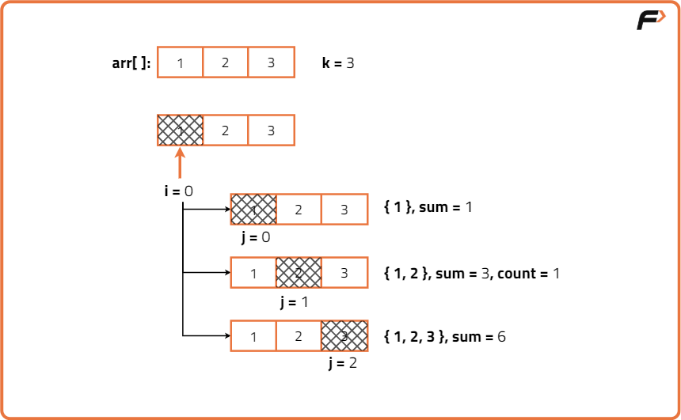
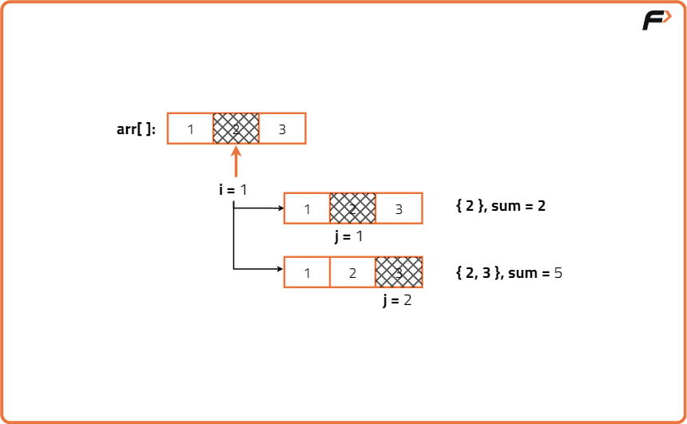
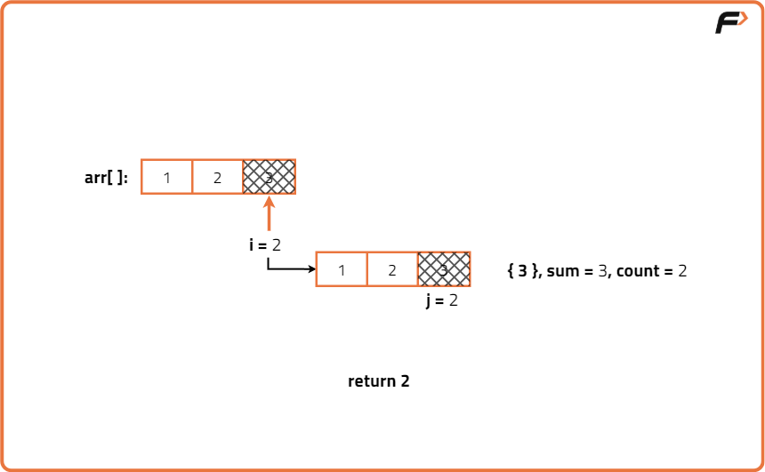
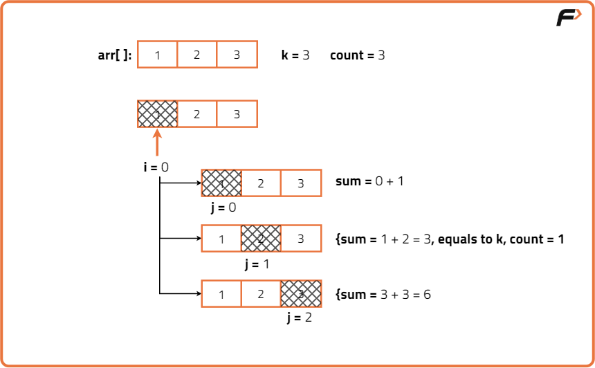
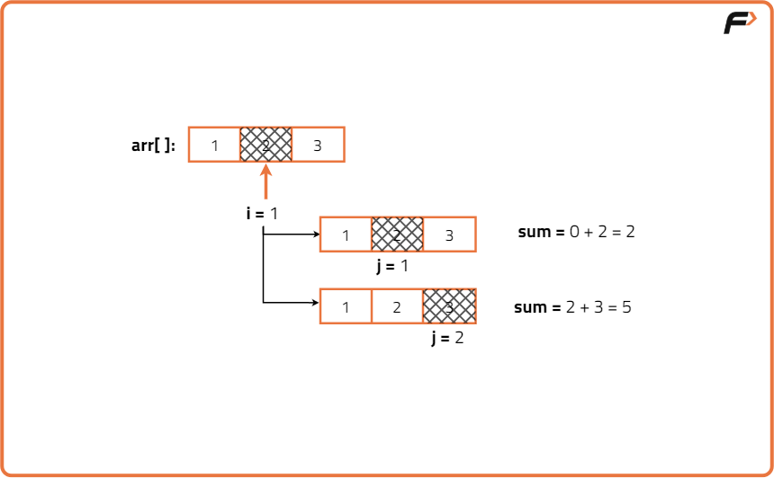
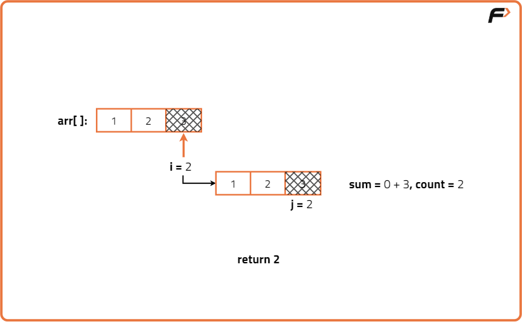
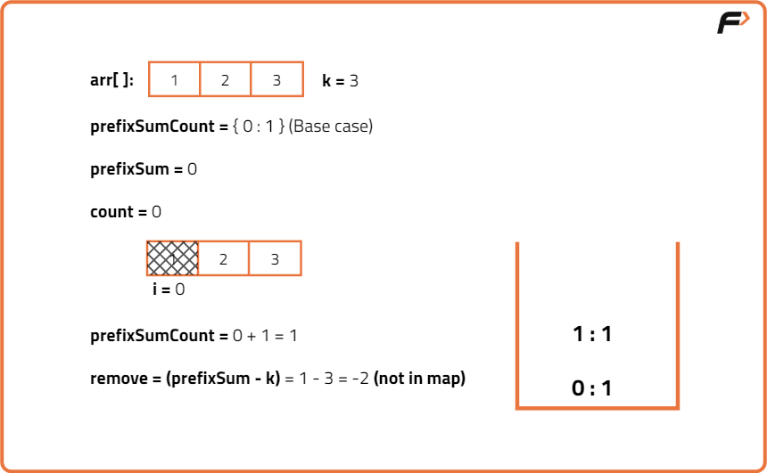
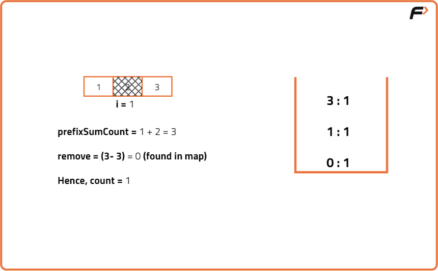
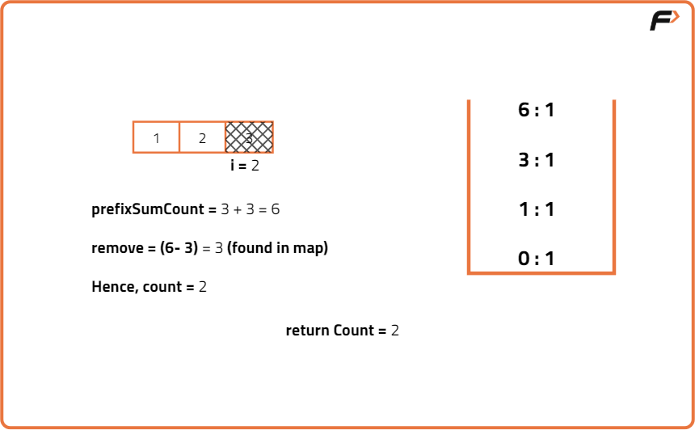
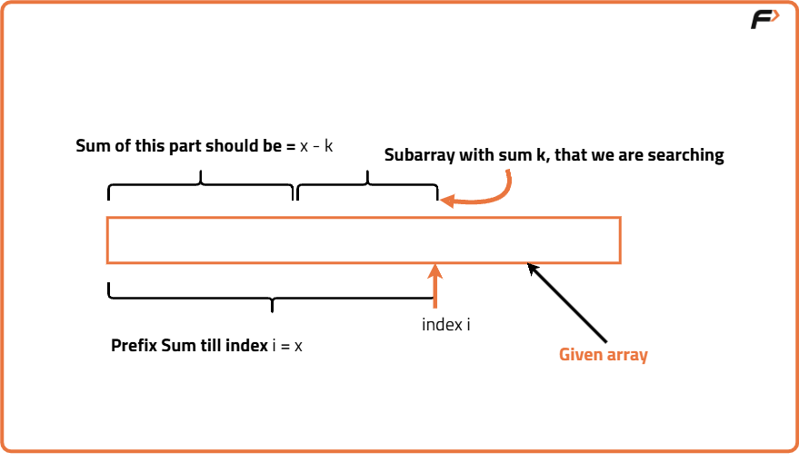

Count Subarray sum Equals K
Problem Statement: Given an array of integers and an integer k, return the total number of subarrays whose sum equals k. A subarray is a contiguous non-empty sequence of elements within an array.
Examples
Input : N = 4, array[] = {3, 1, 2, 4}, k = 6 Output: 2 Explanation: The subarrays that sum up to 6 are [3, 1, 2] and [2, 4].
Input: N = 3, array[] = {1,2,3}, k = 3 Output: 2 Explanation: The subarrays that sum up to 3 are [1, 2], and [3].
Disclaimer: Don’t jump directly to the solution, try it out yourself first.
Brute force Approach
Algorithm
Note: We are selecting every possible subarray using two nested loops and for each of them, we add all its elements using another loop.
- First, we will run a loop(say i) that will select every possible starting index of the subarray. The possible starting indices can vary from index 0 to index n-1(n = size of the array).
- Inside the loop, we will run another loop(say j) that will signify the ending index of the subarray. For every subarray starting from the index i, the possible ending index can vary from index i to n-1(n = size of the array).
- After that for each subarray starting from index i and ending at index j (i.e. arr[i….j]), we will run another loop to calculate the sum of all the elements(of that particular subarray).
- After calculating the sum, we will check if the sum is equal to the given k. If it is, we will increase the value of the count.



Code
#include <bits/stdc++.h>
using namespace std;
class Solution {
public:
// Function to find count of subarrays with sum equal to k
int subarraySum(vector<int>& arr, int k) {
// Size of the array
int n = arr.size();
// Initialize count of subarrays
int count = 0;
// Traverse all possible start indices
for (int i = 0; i < n; i++) {
// Traverse all possible end indices from start
for (int j = i; j < n; j++) {
// Initialize sum for current subarray
int sum = 0;
// Calculate sum of subarray from i to j
for (int m = i; m <= j; m++) {
sum += arr[m];
}
// If sum equals k, increment count
if (sum == k) {
count++;
}
}
}
// Return total count of subarrays
return count;
}
};
int main() {
// Input array
vector<int> arr = {3, 1, 2, 4};
// Target sum
int k = 6;
// Create Solution object
Solution sol;
// Call function and store result
int result = sol.subarraySum(arr, k);
// Print the count of subarrays
cout << "The number of subarrays is: " << result << "\n";
return 0;
}
Complexity Analysis
Time Complexity: O(N3), where N = size of the array.We are using three nested loops here. Though all are not running for exactly N times, the time complexity will be approximately O(N3).
Space Complexity: O(1) as we are not using any extra space.
Better Approach
Algorithm
current subarray = arr[i…..j]
Sum of arr[i….j] = (sum of arr[i….j-1]) + arr[j] This is how we can remove the third loop and while moving j pointer, we can calculate the sum.
- First, we will run a loop(say i) that will select every possible starting index of the subarray. The possible starting indices can vary from index 0 to index n-1(n = array size).
- Inside the loop, we will run another loop(say j) that will signify the ending index as well as the current element of the subarray. For every subarray starting from the index i, the possible ending index can vary from index i to n-1(n = size of the array).
- Inside loop j, we will add the current element to the sum of the previous subarray i.e. sum = sum + arr[j].
- After calculating the sum, we will check if the sum is equal to the given k. If it is, we will increase the value of the count.



Code
#include <bits/stdc++.h>
using namespace std;
class Solution {
public:
// Function to find count of subarrays with sum equal to k
int subarraySum(vector<int>& arr, int k) {
// Size of the array
int n = arr.size();
// Initialize count of subarrays
int count = 0;
// Traverse all possible start indices
for (int i = 0; i < n; i++) {
// Initialize sum for current subarray
int sum = 0;
// Traverse all possible end indices from start
for (int j = i; j < n; j++) {
// Add current element to sum
sum += arr[j];
// If sum equals k, increment count
if (sum == k) {
count++;
}
}
}
// Return total count of subarrays
return count;
}
};
int main() {
// Input array
vector<int> arr = {3, 1, 2, 4};
// Target sum
int k = 6;
// Create Solution object
Solution sol;
// Call function and store result
int result = sol.subarraySum(arr, k);
// Print the count of subarrays
cout << "The number of subarrays is: " << result << "\n";
return 0;
}
Complexity Analysis
Time Complexity: O(n²),We use two nested loops to check all subarrays, where n is the size of the array.
Space Complexity: O(1),Only a few extra variables are used, so constant extra space regardless of input size.
Optimal Approach
Algorithm
Assume, the prefix sum of a subarray ending at index i is x. In that subarray, we will search for another subarray ending at index i, whose sum equals k. Here, we need to observe that if there exists another subarray ending at index i with sum k, then the prefix sum of the rest of the subarray will be x-k. The below image will clarify the concept:
Now, for a subarray ending at index i with the prefix sum x, if we remove the part with the prefix sum x-k, we will be left with the part whose sum is equal to k. And that is what we want. Now, there may exist multiple subarrays with the prefix sum x-k. So, the number of subarrays with sum k that we can generate from the entire subarray ending at index i, is exactly equal to the number of subarrays with the prefix sum x-k, that we can remove from the entire subarray.
That is why, instead of searching the subarrays with sum k, we will keep the occurrence of the prefix sum of the subarrays using a map data structure.
In the map, we will store every prefix sum calculated, with its occurrence in a <key, value> pair. Now, at index i, we just need to check the map data structure to get the number of times that the subarrays with the prefix sum x-k occur. Then we will simply add that number to our answer.
We will apply the above process for all possible indices of the given array. The possible values of the index i can be from 0 to n-1(where n = size of the array)
- First, we will declare a map to store the prefix sums and their counts.
- Then, we will set the value of 0 as 1 on the map.
- Then we will run a loop(say i) from index 0 to n-1(n = size of the array).
- For each index i, we will do the following:
- We will add the current element i.e. arr[i] to the prefix sum.
- We will calculate the prefix sum i.e. x-k, for which we need the occurrence.
- We will add the occurrence of the prefix sum x-k i.e. mpp[x-k] to our answer.
- Then we will store the current prefix sum in the map increasing its occurrence by 1.



Let’s understand this using an example. Assume the given array is [3, -3, 1, 1, 1] and k is 3. Now, for index 0, we get the total prefix sum as 3, and k is also 3. So, the prefix sum of the remove-part should be x-k = 3-3 = 0. Now, if the value is not previously set for the key 0 in the map, we will get the default value 0 for the key 0 and we will add 0 to our answer. This will mean that we have not found any subarray with sum 3 till now. But this should not be the case as index 0 itself is a subarray with sum k i.e. 3.
So, in order to avoid this situation we need to set the value of 0 as 1 on the map beforehand.

Code
#include <bits/stdc++.h>
using namespace std;
class Solution {
public:
// Function to find count of subarrays with sum equal to k using prefix sums and hashmap
int subarraySum(vector<int>& arr, int k) {
// Size of the array
int n = arr.size();
// Map to store frequency of prefix sums
unordered_map<int, int> prefixSumCount;
// Initialize prefix sum and count of subarrays
int prefixSum = 0;
int count = 0;
// Base case: prefix sum 0 has occurred once
prefixSumCount[0] = 1;
// Traverse through the array
for (int i = 0; i < n; i++) {
// Add current element to prefix sum
prefixSum += arr[i];
// Calculate the prefix sum that needs to be removed
int remove = prefixSum - k;
// If this prefix sum has been seen before,
// add its count to the result
if (prefixSumCount.find(remove) != prefixSumCount.end()) {
count += prefixSumCount[remove];
}
// Update the frequency of the current prefix sum
prefixSumCount[prefixSum]++;
}
// Return the total count of subarrays
return count;
}
};
int main() {
// Input array
vector<int> arr = {3, 1, 2, 4};
// Target sum
int k = 6;
// Create Solution object
Solution sol;
// Call function and store result
int result = sol.subarraySum(arr, k);
// Print the count of subarrays
cout << "The number of subarrays is: " << result << "\n";
return 0;
}
Complexity Analysis
Time Complexity: O(n) We traverse the array once, where n is the size of the array. Each prefix sum operation and hashmap lookup is O(1) on average.
Space Complexity: O(n) In the worst case, all prefix sums are distinct and stored in the hashmap, so space grows linearly with input size.